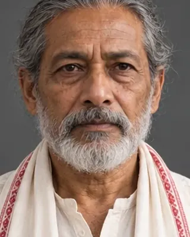

Astabhuj Deva (Mayamara Mahanta)
active 1769; d. 1770 · Mayamara Satra spiritual head

Intervened to spare Lakshmi Singha's life when the rebels captured him in 1769.
- Also called
- Astabhujdeva; Ashtabhujdev; Mayamara Mahanta
Record confidence: medium.